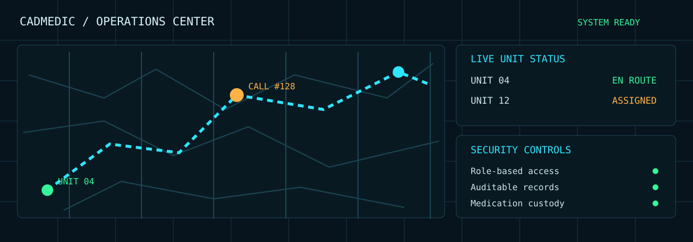
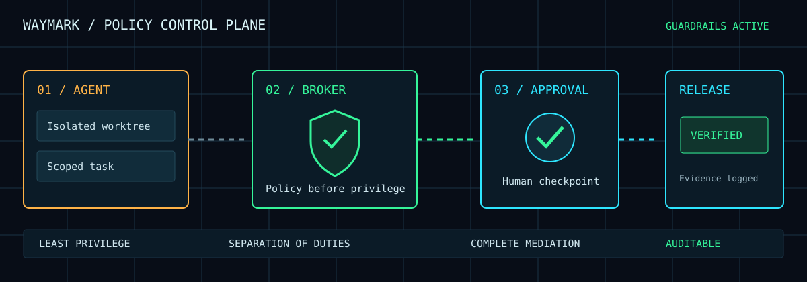
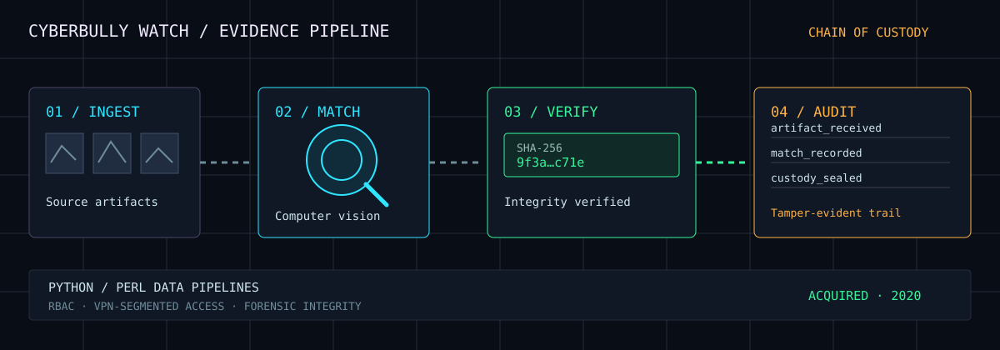
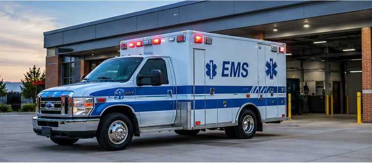

Founder & Principal Engineer
CADMedic.AI & WaymarkHQ · Tampa Bay, FL- Designing and shipping two AI-native platforms end to end.
- Sole owner of architecture, security model, AI integration, CI/CD, and roadmap.
SECURE CHANNEL OPEN · Tampa Bay, FL · Remote-ready● 0 THREATS ACTIVE
CISSP-certified leader with 20+ years building and securing production systems, including 15 years as co-founder & acting CISO of a national SaaS platform serving Fortune 500 partners. I have founded, built, and sold three businesses. Today I build AI-native platforms where security, compliance, and delivery discipline are the architecture, not an afterthought.

SUBJECT FILE SC-2026
Security Executive & AI Platform Builder
● CISSP verified
// proof of work, not promises
Founder · Architect · Engineer

An AI-integrated operations platform for private EMS agencies: one transport record from request to revenue.
As a specialty-care transport paramedic, I built the system my industry needs: CAD dispatch with live unit tracking, ePCR field charting, billing and revenue cycle, fleet management, controlled-substance custody, workforce scheduling, a secure facility request portal, and an offline-capable iOS field app, on one data model. HIPAA alignment is designed in from the first line: PHI protection, role-based access, audit trails, and chain-of-custody for controlled medications.
Founder · Architect · Engineer

A governance control plane for AI coding agents: move at AI speed, keep production under control.
Waymark puts a trusted boundary between agent intent and privileged action: a native macOS Studio that runs agents in isolated workspaces with approvals, checks, and releases in one view, and a Broker that keeps credentials outside agent reach, enforces policy before execution, and keeps a durable evidence trail. Classic doctrine (least privilege, separation of duties, auditability) applied to agentic development.
Founder · Architect · ACQUIRED 2020

A computer-vision security platform for investigative work, founded, shipped, and sold to a larger technology firm.
A cloud-native platform applying machine learning and computer vision to online-safety investigations: high-throughput crawling and ingestion pipelines feeding large-scale image matching, engineered to preserve evidentiary chain of custody for law enforcement and legal review. I led knowledge transfer and handoff after the acquisition.
// each claim maps to shipped work
// chronology of record

// verified via Credly ↗
// where 20+ years of experience goes to work
For: growing companies, boards, leadership roles
For: teams adopting AI agents and LLMs
For: healthcare, payments and similar sectors
For: founders and early-career security people
// build with clarity, lead with confidence
Security strategy, risk management, compliance, and security-by-design.
Secure cloud architecture, AI-enabled platforms, access controls, engineering governance.
Career growth, technical leadership, and the responsibility of shipping production systems.
// the rules behind the work
Security belongs in architecture and everyday engineering decisions, not a final checklist.
Systems must stay dependable when teams, customers, and critical operations rely on them.
Clear permissions, auditable actions, and defined ownership earn trust.
// sample testimonials · replace with verified comments before publishing
Steven has a rare ability to connect deep technical thinking with practical business needs. He looks beyond the immediate fix and builds for resilience over the long term.
SAMPLE COPY — replace with a real testimonial
He approaches security as an enabler, not a roadblock. Steven brings structure to complex risks and communicates clearly with both technical teams and business leaders.
SAMPLE COPY — replace with a real testimonial
Steven combines a builder’s mindset with a strong sense of responsibility. His focus on secure architecture, ownership, and evidence makes difficult projects easier to reason about.
SAMPLE COPY — replace with a real testimonial
What stands out is his practical perspective: understand the real-world constraints, make the important risks visible, and deliver something that teams can operate confidently.
SAMPLE COPY — replace with a real testimonial
01 / 04 · Use arrows to explore
// mentorship · speaking · advisory · other
Have a thoughtful conversation in mind? Choose what you’d like to discuss and share a little context. I’ll have the message format adapt to your topic.